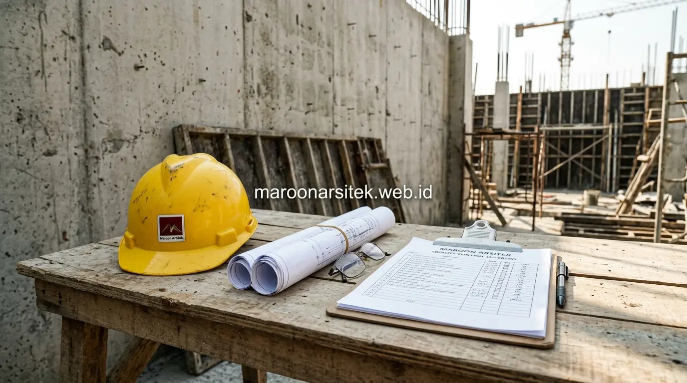

Membangun rumah dari nol membutuhkan koordinasi yang rapi antara desain arsitektur, perhitungan struktur, dan pelaksanaan lapangan agar hasil akhir sesuai rencana dan anggaran. Ketidaksesuaian antara gambar kerja dan eksekusi di lapangan sering menjadi penyebab utama pembengkakan biaya serta keterlambatan proyek. Layanan jasa kontraktor rumah dari Maroon Arsitek hadir sebagai mitra terpercaya bagi pemilik lahan di Jakarta dan Jabodetabek untuk mewujudkan rumah impian dari tahap pondasi hingga serah terima kunci.
Layanan Konstruksi Struktur dari Pondasi hingga Atap
Kontraktor rumah Jakarta dari Maroon Arsitek menangani seluruh tahap struktur bangunan dengan standar teknis yang mengacu pada gambar kerja detail (DED) arsitek dan perencana struktur:
- Pekerjaan Pondasi & Tanah: Penggalian, perataan tanah, dan penentuan jenis pondasi (bore pile, strauss pile, atau cakar ayam footplat) disesuaikan dengan kondisi daya dukung tanah di lokasi proyek.
- Struktur Beton Bertulang (Sloof, Kolom, & Balok): Menggunakan besi beton berstandar SNI dengan mutu beton readymix terukur untuk memastikan kekuatan gempa dan beban bangunan bertingkat.
- Struktur Dak Lantai & Rangka Atap: Pengecoran plat lantai dengan bekisting presisi serta pemasangan kuda-kuda atap baja ringan atau baja WF yang tahan cuaca tropis ekstrem.
Koordinasi antara tim struktur dan tim arsitek dijaga sepanjang proses agar tidak terjadi penyimpangan dari desain awal. Klien mendapat laporan progres berkala sehingga dapat memantau kesesuaian pekerjaan lapangan dengan rencana yang telah disepakati.
Pemilihan Material Sesuai Anggaran dan Kebutuhan Bangunan
Kebutuhan klien terhadap efisiensi anggaran tanpa mengorbankan kualitas struktur dijawab melalui proses pemilihan material yang transparan dan proporsional:
- Material Utama Tanpa Kompromi: Semen berkualitas tinggi, pasir pasang bebas lumpur, dan besi ulir bersertifikasi untuk seluruh elemen struktural penopang beban.
- Rekomendasi Material Arsitektural Fleksibel: Memberikan opsi material finishing alternatif (seperti lantai granit tile motif marmer, cat eksterior elastomeric tahan bocor, dan kusen aluminium kedap suara) yang tetap mewah namun ramah di anggaran.
- Pengadaan Langsung dari Distributor: Menekan biaya proyek dengan rantai pasok material langsung sehingga klien memperoleh harga yang lebih kompetitif.

Pengawasan Proyek dan Kontrol Kualitas Pekerjaan Lapangan
Pengawasan proyek dilakukan secara berkala oleh tim site engineer lapangan untuk memastikan setiap tahap pekerjaan sesuai dengan gambar kerja, jadwal, dan standar kualitas yang telah ditetapkan sebelum konstruksi dimulai.
- Pemeriksaan Material Masuk: Memeriksa kualitas dan volume semen, bata ringan, besi, dan pasir sebelum digunakan untuk pengerjaan.
- Quality Control Pekerjaan Tukang: Menguji kelurusan dinding menggunakan waterpass, ketebalan plesteran, kerapian sambungan pipa MEP, serta ketahanan waterproofing dak beton.
- Laporan Progres Rutin: Klien menerima update berkala dalam bentuk laporan tertulis dan dokumentasi foto/video visual, sehingga tetap tenang meski memiliki kesibukan harian yang padat.
Koordinasi Jadwal Antar Tahapan Pekerjaan Konstruksi
Kebutuhan klien terhadap kepastian jadwal dijawab melalui penyusunan *Time Schedule* dan kurva S proyek yang ketat:
- Pemisahan zona pekerjaan antara instalasi pipa mekanikal-elektrikal (MEP) dengan pekerjaan plester acian agar jalur instalasi tidak perlu dibobok ulang.
- Pengaturan pergantian tim tukang spesialis (tukang struktur, tukang pasang keramik, tukang plafon gypsum, dan tukang cat) secara berurutan tanpa jeda waktu kosong (*downtime*).
- Komunikasi proaktif jika terjadi kendala cuaca hujan ekstrem di wilayah Jakarta beserta rencana percepatan kerja yang terukur.
Penyusunan Rencana Anggaran Biaya Sebelum Konstruksi
Rencana Anggaran Biaya (RAB) disusun secara rinci sebelum konstruksi dimulai, mencakup rincian volume pekerjaan (*bill of quantities*), spesifikasi merek material, dan upah tenaga kerja.
- Transparansi Volume dan Satuan Harga: Setiap pekerjaan (seperti galian m³, pasang bata m², cor beton m³) memiliki harga satuan yang jelas tanpa biaya tersembunyi.
- Sistem Pembayaran Bertahap (Termin Progres): Pembayaran dilakukan berdasarkan pencapaian progres fisik riil di lapangan (misal: DP, pondasi 20%, struktur 50%, finishing 85%, serah terima 100%).
- Garansi Retensi Pemeliharaan: Adanya masa garansi pemeliharaan resmi pasca serah terima untuk memastikan tidak ada kebocoran atau keretakan halus pada bangunan baru.
Penanganan Perubahan Desain di Tengah Proyek
Kebutuhan klien yang menginginkan penambahan atau perubahan desain saat konstruksi berjalan diakomodasi melalui prosedur evaluasi resmi:
- Kajian teknis dampak perubahan terhadap kekuatan struktur eksisting.
- Penyusunan dokumen *Variation Order* (VO) yang memuat rincian tambah-kurang biaya dan penyesuaian durasi waktu pengerjaan sebelum disetujui klien.
- Pelaksanaan pekerjaan perubahan di lapangan baru dimulai setelah ada kesepakatan tertulis agar tidak menimbulkan perselisihan di akhir proyek.